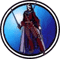

|

|
>> Содержание / Список кланов /
  NightStrangers NightStrangers
Жители дорог, странники в ночи
За плечом клинок, и потертый щит
Может - на коне, чаще же - пешком
Те кто верит в честь, кто един с клинком
Аура из тьмы, что дарует власть
И огонь внутри - что не даст пропасть
Буквы - на щите, N и S - горят
Кто не смел - молчит - и отводит взгляд
Плата велика - жизнь за тьму отдай
Душу заложив, путь забывши в рай
Но не забывай, цели, что ведет
Пусть огонь горит и тебя ведет..
Знай, что нужен там, где тебя все ждут
Знай, огонь внутри - твой попутчик, друг
Он был заложен в грудь твоим главой
Знаю, больно, чтож, это не в первой
Странник, не сверни, странник, лишь дойди
Цели для того, чтобы к ним идти....
... Я приехал в какой-то Богом забытый городок на краю света, и сидя в таверне попивал вкуснейший медовый напиток, настоянный на местных травах. Будучи уже порядком навеселе я стал разглядывать тех малочисленных посетителей, что забрели в это, несуществующее ни на одной карте поселение. Да уж... Кого тут только не было... Как ни странно этот городок и был краем света... Потому как далее на север уже простиралась Тьма. Не найдя ничего достойного моего внимания я было собрался подняться наверх и завалиться на огромную двуспальную кровать как вдруг удаленный, но медленно приближающийся звук заставил меня протрезветь и остановиться. Это скорее был даже не звук, а грохот... Казалось сама Тьма приближалась, направляясь в ту самую таверну где был я, заставляя всех присутствующих замолчать и вслушиваться в темноту. “Сейчас начнется”, подумал я крепко сжимая рукоятку меча, спрятанного под полами моего длинного плаща. Гром гремел все сильнее, неся с собой ветер и молнии... но ни капли дождя ! “Как странно ?”, подумал я, и тут Гром, до сих пор нараставший как приближающееся цунами, дойдя почти до самой двери внезапно смолк. Воцарилась тишина, казавшаяся вечностью и лишь скрип открываемой двери, тяжеленной дубовой двери, растворил тишину. Тогда я впервые увидел их...
...Никто не знает откуда они появились и сколько лет бродили по свету... говорят что когда-то ОНИ правили этими землями по чести и совести, мудро и справедливо. Но Тьма Ужаса стала надвигаться, поглощая на своем пути все, что когда-то было Землей Мира и Справедливости... тогда-то все короли, маги, воины и простой люд восстали против несправедливости... но Ужас овладел ими, и земля теперь стала лишь географической полосой, разделяющей чашу весов Добра и Зла, Света и Тьмы, Ужаса и Справедливости... С тех пор прошли века и даже тысячи лет пролетели... Но неистребимый дух справедливости жил в сердцах правителей до тех пор пока не появился Один, призвавший троих других, живших как и Он вечно, чтобы более не смещалось равновесие чаши весов на этой земле.
...Сев на своих коней они поскакали в разные стороны, договорившись что каждый раз Дух Справедливости будет сводить их вместе когда кому либо понадобится помощь. И тогда Был дан им свыше Гром, чтобы тот оповещал всех о том что едут ОНИ - Ночные Странники, и Гром этот приводил в ужас всех тех, чья душа была нечиста...
И отныне на Земле Ночные Странники будут творить Справедливость силами, данными им свыше...
Официальный сайт клана: http://www.nightstrangers.narod.ru/
|
 |
|